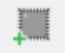

3.7 Configure Hardware
(Ask a Question)The following sections provide information about configuring the hardware for your designs.
3.7.1 Programming Connectivity and Interface
(Ask a Question)The Programming Connectivity and Interface window shows the physical chain from TDI to TDO or SPI Slave configuration. To open this window, expand Configure Hardware in the Libero SoC Design Flow window, and then double-click Programming Connectivity and Interface.
The Programming Connectivity and Interface view provides options for performing the following actions on non-target devices.
| Option | Icon | Description |
|---|---|---|
| Select Programming Interface | Select JTAG or SPI Slave mode. SPI Slave mode is supported by FlashPro6 for PolarFire devices. JTAG is the default interface. | |
| Construct Chain Automatically | Constructs the physical chain automatically. | |
| Add Microsemi Device | Adds a Microchip device to the chain. | |
| Add Non-Microsemi Device |  | Adds a non-Microchip device to the chain. |
| Add Microsemi Devices From Files | Adds a Microchip device from a programming file. | |
| Delete Selected Devices | Deletes selected devices in the grid. | |
| Scan and Check Chain | Scans the physical chain connected to the programmer and check if it matches the chain constructed in the grid. | |
| Zoom In | Zooms into the grid. | |
| Zoom Out | Zooms out of the grid. |
3.7.1.1 Hover Information
(Ask a Question)If you hover your pointer over a device in the grid, the device tooltip shows the following device information.
| Tooltip | Description |
|---|---|
| Name | User-specified device name. If you have two or more identical devices in your chain, use this field to give them unique names. |
| Device | Name of the device. |
| File | Path to the programming file. |
| Programming action | When a programming file is loaded, select a programming action for any device that is not a Libero design device. |
| IR | Length of the device instruction. |
| TCK | Maximum clock frequency, in Hz, to program a specific device; Libero uses this information to ensure that the programmer operates at a frequency lower than the slowest device in the chain. |
3.7.1.2 Device Chain Details
(Ask a Question)The device within the chain contains the following details.
| Detail | Description |
|---|---|
| Libero design device | Red circle within Microsemi logo. Libero design device cannot be disabled. |
| Left/right arrow | Moves the device left or right according to the physical chain. |
| Enable device | Enables the device for programming.
|
| Name | Name of your specified device. |
| File | Path to the programming file. |
| Set as Libero Design Device | Sets the Libero design device when there are multiple identical Libero design devices in the chain. |
3.7.1.3 Right-Click Options
(Ask a Question)The following figure shows the options that appear when you right-click on your design.
Right-clicking a device displays the following options.
| Option | Description |
|---|---|
| Set as Libero Design Device | Sets the Libero design device when there are multiple identical Libero design devices in the chain. |
| Configure Device | Reconfigures the device. For a Libero SoC target device, the dialog box appears, but only the device name can be edited. |
| Enable Device for Programming | Enables the device for programming.
|
| Load Programming File | Loads the programming file for the selected device. This option is not supported for Libero SoC target design devices. |
| Set Serial Data | Displays the Serial Settings dialog box, where you can set your serialization data. |
| Select and Configure Action/Procedure | This option applies to devices other than the Libero SoC target
design device. Choices are:
|
| Move Device Left/Right | Moves the device in the chain to left or right. |
3.7.2 Programmer Settings
(Ask a Question)For the JTAG interface, you can set specific voltage and force TCK frequency values for your programmer. For the SPI Slave interface, you can set specific voltage and force SCK frequency values for your programmer. You perform these actions using the Programmer Settings dialog box.
To display the Programmer Settings dialog box, in the Libero SoC Design Flow window, expand Configure Hardware and double-click Configure Programmer
OR
Right-click Configure Programmer and choose Programmer Settings.
The Programmer Settings dialog box has options for FlashPro6/5/4/3/3X. The following table lists the TCK frequency limitations for the selected programmer:
| Programmer | Limitations |
|---|---|
| FlashPro6 | 1, 2, 3, 4, 5, 6, 7, 8, 9, 10, 11, 12, 13, 14, 15, 16, 17, 18, 19, 20 MHz |
| FlashPro5 | 1, 2, 3, 4, 5, 6, 10, 15, 30 MHz |
| FlashPro4 | 1, 2, 3, 4, 5, 6 MHz |
| FlashPro3/3X | 1, 2, 3, 4, 6 MHz |
For information about TCK frequency limits by target device, see the target device datasheet.
During execution, the frequency set by the FREQUENCY statement in the PDB/STAPL file overrides the TCK frequency setting in the Programmer Settings dialog box. To prevent this override, check Force TCK Frequency
- 1.00 MHz
- 2.00 MHz
- 2.50 MHz
- 3.33 MHz
- 4.00 MHz
- 5.00 MHz
- 6.67 MHz
- 8.00 MHz
- 10.00 MHz
- 13.33 MHz
- 20.00 MHz
3.7.2.1 FlashPro5/4/3/3X Programmer Settings
(Ask a Question)By default, Force TCK Frequency is not checked. This setting instructs the FlashPro5/4/3/3X to use the TCK frequency specified by the Frequency statement in the PDB/STAPL file(s). If you check Force TCK Frequency, select the appropriate MHz frequency.
For FlashPro4/3X settings, you can switch the TCK mode between Free Running Clock and Discrete Clocking. By default, TCK Mode is set to Free Running Clock. Use Discrete Clocking when there is a JTAG non-compliant device in a chain with Microchip devices.
After you make your selections, click OK.
3.7.2.2 TCK Setting (Force TCK Frequency)
(Ask a Question)If Force TCK Frequency is checked in Programmer Setting, the selected TCK value is set for the programmer and the Frequency statement in the PDB/STAPL file is ignored.
3.7.2.3 Default TCK Frequency
(Ask a Question)If the IPD/STAPL file or Chain does not exist, the default TCK frequency is set to 4 MHz. If more
than one Microchip flash device is targeted in the chain, the
FlashPro Express software passes through all the files and
searches for the freq keyword and the MAX_FREQ
Note field. The FlashPro
Express software uses the lowest value of all the TCK frequency
settings and the MAX_FREQ Note field
values.
3.7.3 Select Programmer
(Ask a Question)The Select Programmer dialog box allows you to select the programmer you want to use.
To display the Select Programmer dialog box, in the Libero SoC Design Flow window, expand Configure Hardware and double-click Select Programmer.
OR
Right-click Select Programmer.